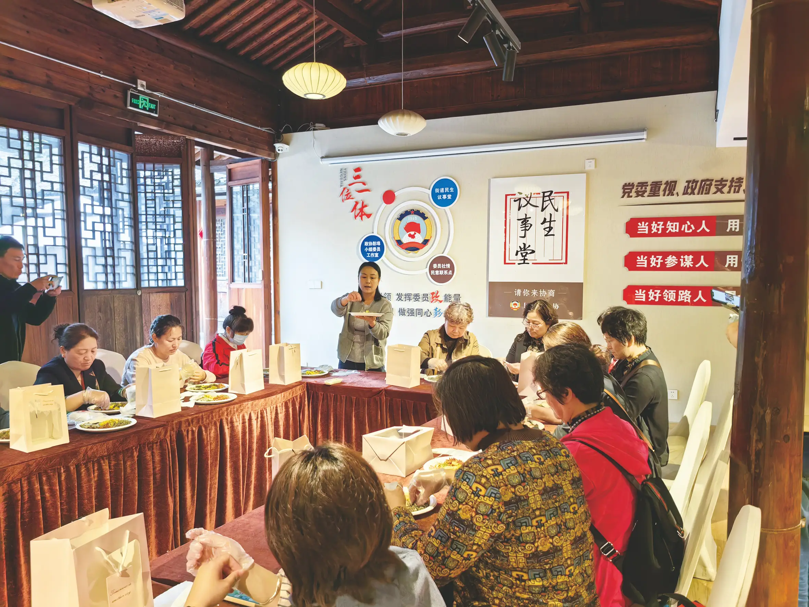
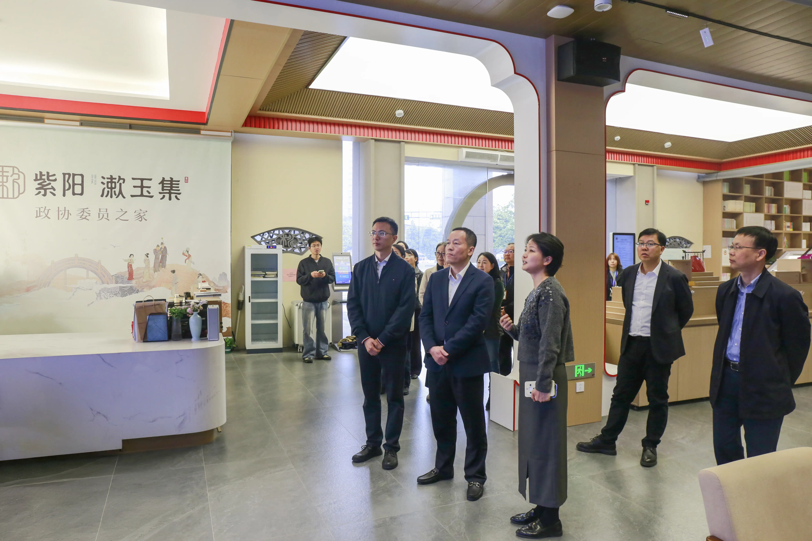

关于上城区分中心
上城区政协坚持党建引领，锚定新时代人民政协新方位新使命，与市政协新时代协商民主实践中心同频共振、同向发力。立足区域禀赋，整合优势资源，将委员一线履职、政协工作延伸、基层社会治理三者有机结合，"三位一体"建设协商民主实践平台，推动"一南一北"两大分中心建立常态化运营机制，着力打造"一中心一主题、多站点互联动"的平台矩阵。

🏛️ 彭埠分中心
位置：彭埠街道罗家老宅
成立：2023年3月
布局："一园一堂一馆两站"
依托市政协党建联建示范点、杭州市青少年模拟政协实践基地等阵地资源打造。
南部主中心
🏛️ 紫阳分中心
位置：紫阳西泠书房
成立：2025年底
布局："一家七景"
依托"新中国第一居"治理底蕴与宋韵文化资源，打通协商民主"最后一公里"。
北部副中心彭埠分中心2026年度活动
🧧
1月 暖冬同心
迎新春送温情
🏠
2月 协商焕新
罗家老宅更新
📚
3月 书香履职
两会精神学习
💼
4月 企业赋能
AGI青创调研
🎭
5月 文旅融合
非遗文化体验
🏘️
6月 未来社区
杨柳郡调研
🌟
7月 关爱青春
青少年心理
🤝
8月 共建共享
租住融合协商
❤️
9月 便民情暖
敬老爱老服务
🚴
10月 暖新成长
小哥驿站协商
📖
11月 履职交流
读书成果交流
🏆
12月 总结提升
年度总结展示
紫阳分中心2026年度活动
🎊
1月 厚植民生
新春惠民服务
🏛️
2月 深化坊巷
二十三坊更新
📚
3月 深学强履职
两会精神学习
💡
4月 聚力经济
特色楼宇提质
🎭
5月 激活人文
非遗坊巷文旅
🏮
6月 赋能文旅
中河南路改造
👶
7月 守护少年
暑期公益服务
🛡️
8月 创新治理
矛盾调处体系
👴
9月 情暖老年
养老服务提升
🏠
10月 提升民生
一老一小一残
📖
11月 深学促履职
委员读书交流
⭐
12月 擦亮品牌
争创示范点